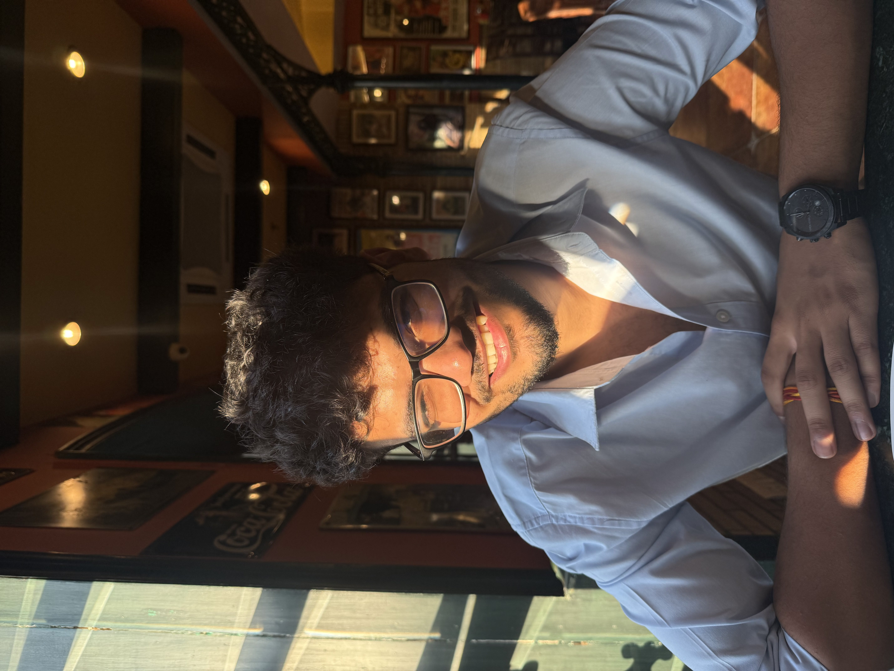
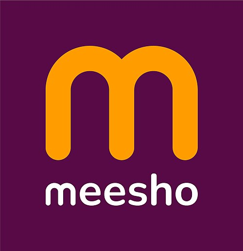
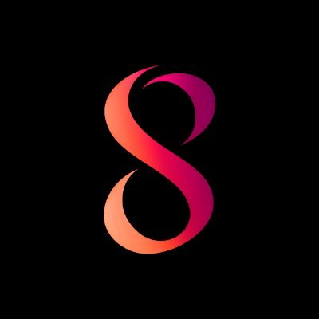

Sushant Faujdar
I make confusing things make sense.
Work

Meesho — Senior Business Associate
Worked on improving the end-to-end order success funnel (N/G), identifying key drop-offs across pre and post shipment stages.

Sovran Wallet — Product Intern
Led UX and product improvements across onboarding and transactions.
Summer of Bitcoin — Product Designer
2024
Redesigned product experiences and improved user engagement.
Education
IIT Kanpur — B.Tech Chemical Engineering
2021 – 2025
Built strong analytical foundations and explored product thinking.